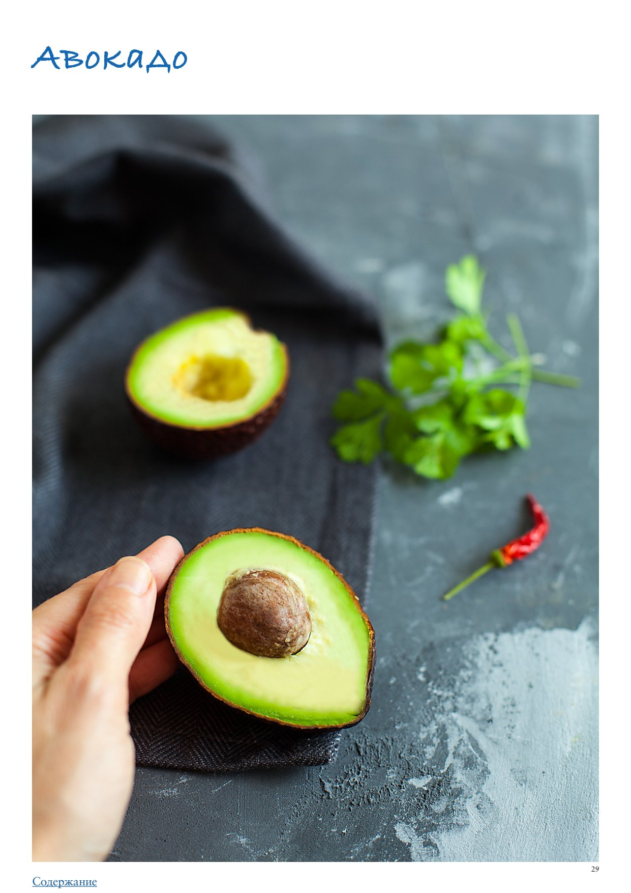

Авокадо
Авокадо сейчас можно найти практически в любом продуктовом магазине. Тем не менее, «своим» и близким для многих оно пока не стало. Когда мы задумываемся, что можно из него приготовить, на ум приходит разве что гуакамоле, салат или смузи… Но это ошибочное мнение. Авокадо — волшебный продукт, оно предлагает невероятное разнообразие способов использования. И если еще совсем недавно мэтры кулинарии были категоричны — авокадо едят только в холодном виде, никакой термической обработки, то сейчас авокадо жарят на гриле, запекают, добавляют в тесто для кексов и брауни, готовят на его основе крем для полезных десертов, соусы для горячей пасты и так далее. Все ограничения сняты! Вкус авокадо универсален. Он неяркий, нежный, чуточку ореховый, с очень легкой, едва заметной горчинкой, а потому подходит как для несладких, так и для сладких блюд. В последние годы популярность фрукта (да-да, это именно фрукт, хотя из-за несладкого вкуса мы с вами относим его к категории овощей) все выше, так как растет число сторонников здорового образа жизни, а авокадо будто специально создано для них и по праву занимает почетное место в списке современных супер-фудов. Так как авокадо растет в тропиках, сезонности в его употреблении мы не придерживаемся, в продаже оно круглый год. Хотя я стараюсь, проживая в Европе, покупать испанские авокадо. Сорта авокадо На рынке представлены несколько основных сортов авокадо, рекомендуем научиться их различать, потому что они подходят для разных целей. Хаас — округлые плоды с темно-коричневой кожурой, легко чистятся. Мякоть нежная, маслянистая, с ореховым вкусом. Одно из достоинств этого сорта — он хорошо хранится и доходит до спелости в домашних условиях. Флоридское (Фуэрте) — грушевидные плоды с зеленой, почти гладкой кожурой, чистятся с трудом. Мякоть, даже спелая, довольно плотная, ореховый вкус почти не чувствуется. Пинкертон — сильно вытянутые плоды с толстой пупырчатой зеленой кожурой, легко чистятся. Мякоть очень мягкая, маслянистая, желтого цвета. Рид — плоды почти круглой формы с темно-зеленой шероховатой кожурой, чистятся сравнительно легко. Мякоть средней плотности, ореховый вкус выражен слабо. Если вы собираетесь размять авокадо (для гуакамоле, супа или добавления в тесто при выпечке), выбирайте сорта Хаас или Пинкертон. Для блюд, где нужно, чтобы авокадо сохраняло форму (сэндвичи, роллы, салаты), подойдут Флоридское или Рид. Как выбирать Цвет и состояние кожуры — то, что зеленое авокадо неспелое, а коричневое спелое, — миф. Цвет кожуры зависит от сорта. Важно, чтобы на кожуре не было темных пятен и вмятин. Мягкость — все авокадо транспортируют неспелым, но его можно довести до мягкости, оно прекрасно дозревает уже в собранном виде. Чтобы определить мягкость плода, не нужно надавливать пальцем, это оставит вмятину, и плод начнет темнеть. Аккуратно сожмите плод ладонью целиком, и вы почувствуете, поддается мякоть или нет. Верх плода (место прикрепления плодоножки) — если оно очень светлое, а плодоножка отрывается с трудом, авокадо неспелое. У спелого плода это место слегка темнеет, плодоножка отделяется легко. У перезревшего плода это место чернеет и слегка сморщивается.
Как дозаривать и хранить Сложите твердые плоды в бумажный пакет, держите в темном месте при комнатной температуре до мягкости от 2 до 5 дней. Процесс можно ускорить, если добавить в тот же пакет яблоко или банан. Мягкое авокадо при комнатной температуре может быстро испортиться, его следует держать в холодильнике в ящике для овощей до 1,5 недель (точное время хранения зависит от сорта). Если вы хотите сохранить разрезанный плод, есть два способа, попроще и посложнее: